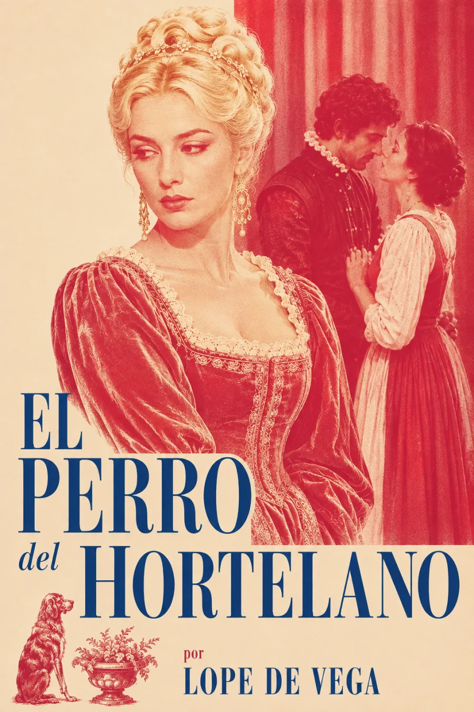

SINOPSIS
En la Nápoles aristocrática de su tiempo, Lope de Vega retrata a Diana, condesa de Belflor, cuyo deseo por su secretario Teodoro entra en conflicto con su orgullo de clase y sus celos de Marcela, como el perro del refrán que "ni come ni deja comer." Los celos y el orgullo de clase enredan a Diana en un vaivén de rechazo y deseo hasta que el astuto criado Tristán urde un engaño que resuelve, sin resolverlo del todo, el abismo social entre los amantes. Una de las comedias de capa y espada más ingeniosas del Siglo de Oro sobre el amor contra las convenciones de linaje.
Publicada en la Oncena parte de las comedias de Lope (1618). Edición de Rosa Navarro Durán · Centro Virtual Cervantes. Los puntos de audio se incorporarán con la grabación.
ACTOS
Acto primero
Acto segundo
Acto tercero
RESEÑAS

Bueno